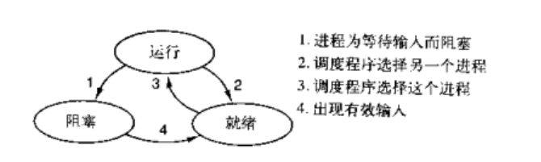

协程理论 进程是资源分配的最小单位,线程是CPU调度的最小单位
无论是创建多进程还是创建多线程来解决问题，都要消耗一定的时间来创建进程、创建线程、以及管理 他们之间的切换。
随着我们对于效率的追求不断提高，基于单线程来实现并发又成为一个新的课题，即只用一个主线程 （很明显可利用的cpu只有一个）情况下实现并发。这样就可以节省创建线进程所消耗的时间。
cpu正在运行一个任务，会在两种情况下切走去执行其他的任务（切换由操作系统强制控制），一种情 况是该任务发生了阻塞，另外一种情况是该任务计算的时间过长

其中第二种情况并不能提升效率，只是为了让cpu能够雨露均沾，实现看起来所有任务都被“同时”执行的 效果，如果多个任务都是纯计算的，这种切换反而会降低效率。
为此我们可以基于yield来验证。yield本身就是一种在单线程下可以保存任务运行状态的方法
yield可以保存状态，yield的状态保存与操作系统的保存线程状态很像，但是yield是代码级别控制 的，更轻量级
send可以把一个函数的结果传给另外一个函数，以此实现单线程内程序之间的切换
1 2 3 4 5 6 7 8 9 10 11 12 13 14 15 16 17 18 19 20 21 22 import timedef consumer ():'''任务1:接收数据,处理数据''' while True :yield def producer ():'''任务2:生产数据''' next (g)for i in range (10000000 ):print (stop-start)
第一种情况的切换。在任务一遇到io情况下，切到任务二去执行，这样就可以利用任务一阻塞的时间完 成任务二的计算，效率的提升就在于此。但是如果一直在执行高强度的计算，这样切换反而会降低效率。
1 2 3 4 5 6 7 8 9 10 11 12 13 14 15 16 17 18 19 import timedef consumer ():'''任务1:接收数据,处理数据''' while True :yield def producer ():'''任务2:生产数据''' next (g)for i in range (10000000 ):2 )print (stop-start)
可以控制多个任务之间的切换，切换之前将任务的状态保存下来，以便重新运行时，可以基于暂停 的位置继续执行。
可以控制多个任务之间的切换，切换之前将任务的状态保存下来，以便重新运行时，可以基于暂停 的位置继续执行。
协程 协程是一种用户态的轻量级线程，即协程是由用户程序自己控制调度的。
python的线程属于内核级别的，即由操作系统控制调度（如单线程遇到io或执行时间过长就会被迫 交出cpu执行权限，切换其他线程运行）
单线程内开启协程，一旦遇到io，就会从应用程序级别（而非操作系统）控制切换，以此来提升效 率（！！！非io操作的切换与效率无关）
对比操作系统控制线程的切换，用户在单线程内控制协程的切换
优点：
协程的切换开销更小，属于程序级别的切换，操作系统完全感知不到，因而更加轻量级
单线程内就可以实现并发的效果，最大限度地利用cpu
缺点：
协程的本质是单线程下，无法利用多核，可以是一个程序开启多个进程，每个进程内开启多个线 程，每个线程内开启协程
协程指的是单个线程，因而一旦协程出现阻塞，将会阻塞整个线程
协程特点：
必须在只有一个单线程里实现并发
修改共享数据不需加锁
用户程序里自己保存多个控制流的上下文栈
附加：一个协程遇到IO操作自动切换到其它协程（如何实现检测IO，yield、greenlet都无法实现， 就用到了gevent模块（select机制）
Greenlet模块 pip install greenlet
1 2 3 4 5 6 7 8 9 10 11 12 13 14 15 16 from greenlet import greenletdef eat (name ):print ('%s eat 1' %name)'aaron' )print ('%s eat 2' %name)def play (name ):print ('%s play 1' %name)print ('%s play 2' %name)'aaron' )
单纯的切换（在没有io的情况下或者没有重复开辟内存空间的操作），反而会降低程序的执行速度
1 2 3 4 5 6 7 8 9 10 11 12 13 14 15 16 17 18 19 20 21 22 23 24 25 26 27 28 29 30 31 32 33 34 35 36 37 38 39 import timedef f1 ():1 for i in range (10000000 ):def f2 ():1 for i in range (10000000 ):print ('run time is %s' %(stop-start))from greenlet import greenletimport timedef f1 ():1 for i in range (10000000 ):def f2 ():1 for i in range (10000000 ):print ('run time is %s' %(stop-start))
greenlet只是提供了一种比generator更加便捷的切换方式，当切到一个任务执行时如果遇到io，那就原 地阻塞，仍然是没有解决遇到IO自动切换来提升效率的问题。
单线程里的这20个任务的代码通常会既有计算操作又有阻塞操作，我们完全可以在执行任务1时遇到阻 塞，就利用阻塞的时间去执行任务2。。。。如此，才能提高效率，这就用到了Gevent模块。
Gevent模块 pip install gevent
Gevent 是一个第三方库，可以轻松通过gevent实现并发同步或异步编程，在gevent中用到的主要模式 是Greenlet, 它是以C扩展模块形式接入Python的轻量级协程。 Greenlet全部运行在主程序操作系统进 程的内部，但它们被协作式地调度。
用法介绍
1 2 3 4 5 6 7 8 9 10 11 g1=gevent.spawn(func,1 ,2 ,3 ,x=4 ,y=5 )
1 2 3 4 5 6 7 8 9 10 11 12 13 14 15 16 17 import geventdef eat (name ):print ('%s eat 1' %name)2 )print ('%s eat 2' %name)def play (name ):print ('%s play 1' %name)1 )print ('%s play 2' %name)'aaron' )'aaron' )print ('主' )
上例gevent.sleep(2)模拟的是gevent可以识别的io阻塞,而time.sleep(2)或其他的阻塞,gevent是不能直接识别的需要用下面一行代码,打补丁,就可以识别了
from gevent import monkey;monkey.patch_all()必须放到被打补丁者的前面，如time，socket模块之前
或者我们干脆记忆成：要用gevent，需要将from gevent import monkey;monkey.patch_all()放到文件的开头
1 2 3 4 5 6 7 8 9 10 11 12 13 14 15 16 17 18 from gevent import monkey;monkey.patch_all()import geventimport timedef eat ():print ('eat food 1' )2 )print ('eat food 2' )def play ():print ('play 1' )1 )print ('play 2' )print ('主' )
用threading.current_thread().getName()来查看每个g1和g2，查看的结果为DummyThread-n，即假线程
1 2 3 4 5 6 7 8 9 10 11 12 13 14 15 16 17 18 19 20 from gevent import monkey;monkey.patch_all()import threadingimport geventimport timedef eat ():print (threading.current_thread().getName())print ('eat food 1' )2 )print ('eat food 2' )def play ():print (threading.current_thread().getName())print ('play 1' )1 )print ('play 2' )print ('主' )
Gevent之同步与异步 1 2 3 4 5 6 7 8 9 10 11 12 13 14 15 16 17 18 19 20 21 22 23 24 25 26 27 from gevent import spawn,joinall,monkey;monkey.patch_all()import timedef task (pid ):""" Some non-deterministic task """ 0.5 )print ('Task %s done' % pid)def synchronous (): for i in range (10 ):def asynchronous (): for i in range (10 )]print ('DONE' )if __name__ == '__main__' :print ('Synchronous:' )print ('Asynchronous:' )
Gevent之应用举例一 1 2 3 4 5 6 7 8 9 10 11 12 13 14 15 16 17 18 19 from gevent import monkey;monkey.patch_all()import geventimport requestsimport timedef get_page (url ):print ('GET: %s' %url)if response.status_code == 200 :print ('%d bytes received from %s' %(len (response.text),url))'https://www.python.org/' ),'https://www.yahoo.com/' ),'https://github.com/' ),print ('run time is %s' %(stop_time-start_time))
Gevent之应用举例二，协程并发聊天室 通过gevent实现单线程下的socket并发
注意 ：from gevent import monkey;monkey.patch_all()一定要放到导入socket模块之前，否则gevent 无法识别socket的阻塞
服务端
1 2 3 4 5 6 7 8 9 10 11 12 13 14 15 16 17 18 19 20 21 22 23 24 25 26 27 28 29 30 31 from gevent import monkey;from socket import *import geventdef server (server_ip,port ):1 )5 )while True :def talk (conn,addr ):try :while True :1024 )print ('client %s:%s msg: %s' %(addr[0 ],addr[1 ],res))except Exception as e:print (e)finally :if __name__ == '__main__' :'127.0.0.1' ,8088 )
客户端
1 2 3 4 5 6 7 8 9 10 11 12 from socket import *'127.0.0.1' ,8080 ))while True :input ('>>: ' ).strip()if not msg:continue 'utf-8' ))1024 )print (msg.decode('utf-8' ))
多线程并发客户端
1 2 3 4 5 6 7 8 9 10 11 12 13 14 15 16 17 18 19 20 from threading import Threadfrom socket import *import threadingdef client (server_ip,port ):0 while True :'%s say hello %s' %'utf-8' ))1024 )print (msg.decode('utf-8' ))1 if __name__ == '__main__' :for i in range (500 ):'127.0.0.1' ,8088 ))